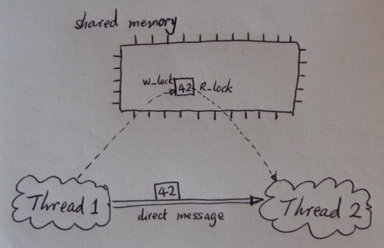

Shared Memory Mutliprocessing Is An Illusion Believe it or not, shared memory multiprocessing systems dont really exist. This may sound crazy, but I hope you see what I mean. Uncontrolled access to shared memory contents led to chaos, thus in the past several decades, various synchronization mechanisms have been devised. However, all the mechanisms that we have seen so far have very ad-hoc semantics and are notoriously hard to use. Operating systems books usually present the classical synchronization problems and their standard solutions as they are, but never explain how somebody could ever arrive at the solutions systematically. The secret is that nobody really knows a systematic way. The current state-of-the-art in shared memory programming is that race conditions, deadlocks, are still hampering even the worlds best programmers. My understanding is that, if you happen to get it right, those synchronization mechanisms (subconsciously) serve the same and one purpose: to simulate a message passing system. Shared memory segments serve as message buffers, and synchronizations establish communication channels. Reads and writes of memory locations correspond to receives and sends of messages. For any channel and at any time, information flows in only one direction. This equivalence can be depicted in the above picture. So semantically speaking, every correct shared memory program is essentially a message passing program. Shared memory multiprocessing is an illusion, hiding the message passing (or transactional) nature of concurrent computation. It is helpful to think of a shared memory system as a particular implementation of a message passing system even if we have to write shared memory programs. |